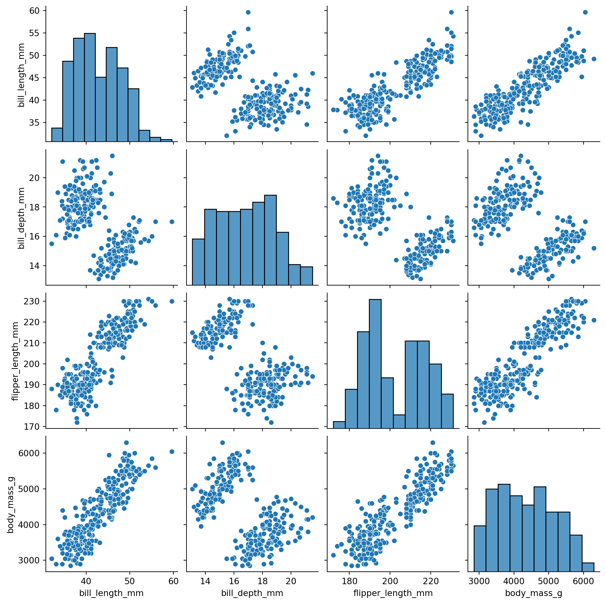
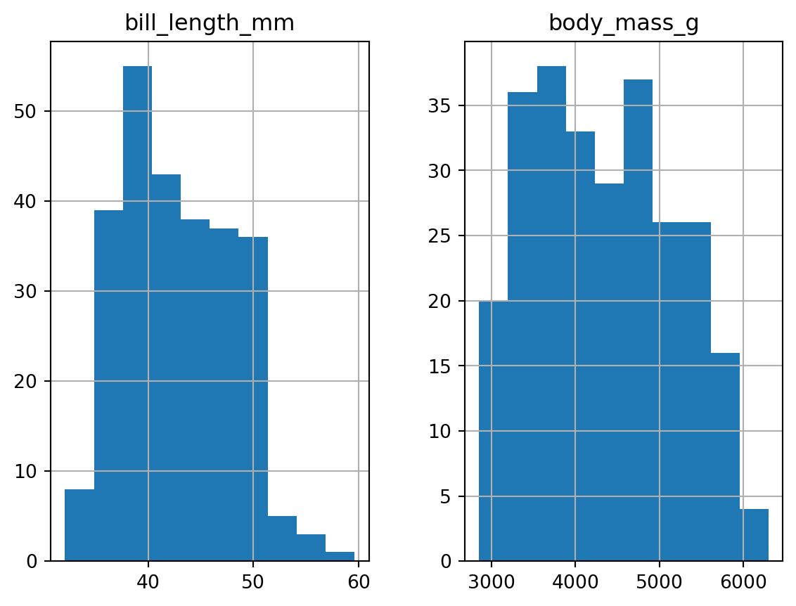
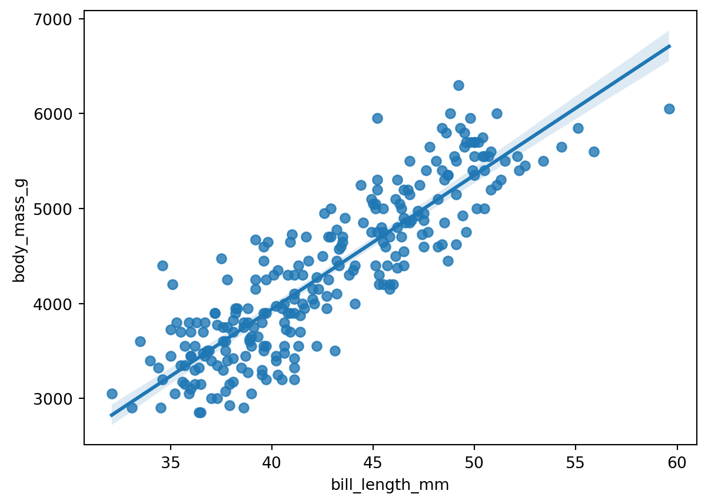
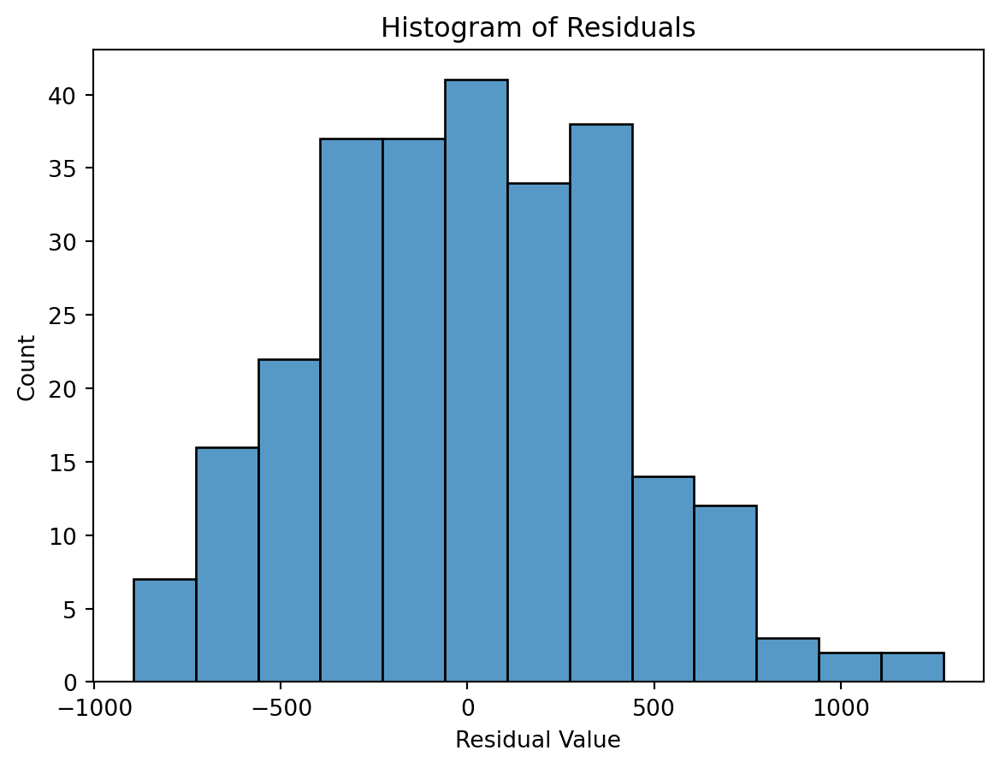
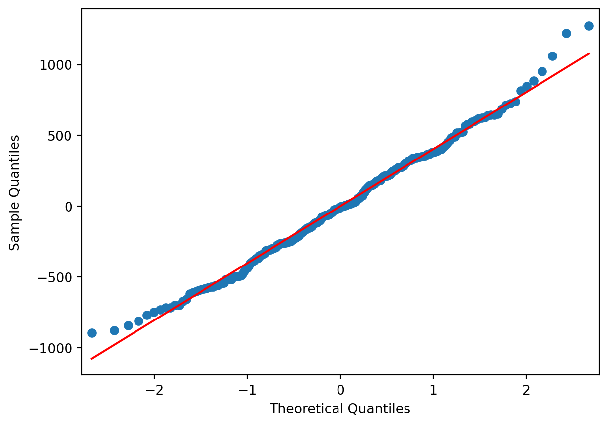
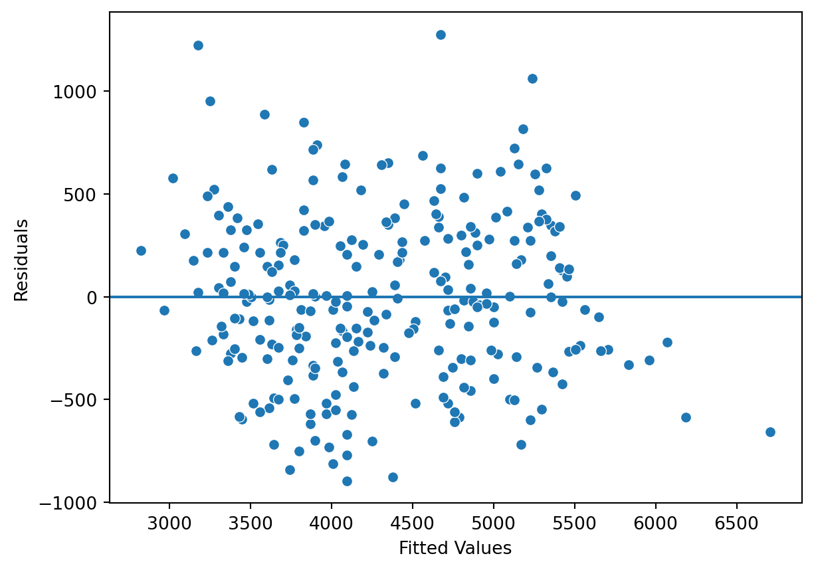

# Import packages
import pandas as pd
import seaborn as snsUntitled
> Simple Linear Regression
# Load dataset
penguins = sns.load_dataset("penguins")
# Examine first 5 rows of dataset
penguins.head()| species | island | bill_length_mm | bill_depth_mm | flipper_length_mm | body_mass_g | sex | |
|---|---|---|---|---|---|---|---|
| 0 | Adelie | Torgersen | 39.1 | 18.7 | 181.0 | 3750.0 | Male |
| 1 | Adelie | Torgersen | 39.5 | 17.4 | 186.0 | 3800.0 | Female |
| 2 | Adelie | Torgersen | 40.3 | 18.0 | 195.0 | 3250.0 | Female |
| 3 | Adelie | Torgersen | NaN | NaN | NaN | NaN | NaN |
| 4 | Adelie | Torgersen | 36.7 | 19.3 | 193.0 | 3450.0 | Female |
Data cleaning
For the purposes of this course, we are focusing our analysis on Adelie and Gentoo penguins, and will be dropping any missing values from the dataset. In a work setting, you would typically examine the data more thoroughly before deciding how to handle missing data (i.e., fill in, drop, etc.). Please refer back to previous program content if you need to review how to handle missing data.
# Keep Adelie and Gentoo penguins, drop missing values
penguins_sub = penguins[penguins["species"] != "Chinstrap"]
penguins_final = penguins_sub.dropna()
penguins_final.reset_index(inplace=True, drop=True) You can review the documentation for dropna() and reset_index(). In short, the dropna() function by default removes any rows with any missing values in any of the columns. The reset_index() function resets the index values for the rows in the dataframe. Typically, you use reset_index() after you’ve finished manipulating the dataset. By setting inplace=True, you will not create a new DataFrame object. By setting drop=True, you will not insert a new index column into the DataFrame object.
penguins_final| species | island | bill_length_mm | bill_depth_mm | flipper_length_mm | body_mass_g | sex | |
|---|---|---|---|---|---|---|---|
| 0 | Adelie | Torgersen | 39.1 | 18.7 | 181.0 | 3750.0 | Male |
| 1 | Adelie | Torgersen | 39.5 | 17.4 | 186.0 | 3800.0 | Female |
| 2 | Adelie | Torgersen | 40.3 | 18.0 | 195.0 | 3250.0 | Female |
| 3 | Adelie | Torgersen | 36.7 | 19.3 | 193.0 | 3450.0 | Female |
| 4 | Adelie | Torgersen | 39.3 | 20.6 | 190.0 | 3650.0 | Male |
| ... | ... | ... | ... | ... | ... | ... | ... |
| 260 | Gentoo | Biscoe | 47.2 | 13.7 | 214.0 | 4925.0 | Female |
| 261 | Gentoo | Biscoe | 46.8 | 14.3 | 215.0 | 4850.0 | Female |
| 262 | Gentoo | Biscoe | 50.4 | 15.7 | 222.0 | 5750.0 | Male |
| 263 | Gentoo | Biscoe | 45.2 | 14.8 | 212.0 | 5200.0 | Female |
| 264 | Gentoo | Biscoe | 49.9 | 16.1 | 213.0 | 5400.0 | Male |
265 rows × 7 columns
Exploratory data analysis
Before you construct any model, it is important to get more familiar with your data. You can do so by performing exploratory data analysis or EDA. Please review previous program materials as needed if you would like to refamiliarize yourself with EDA concepts.
Since this part of the course focuses on simple linear regression, you want to check for any linear relationships among variables in the dataframe. You can do this by creating scatterplots using any data visualization package, for example matplotlib.plt, seaborn, or plotly.
To visualize more than one relationship at the same time, we use the pairplot() function from the seaborn package to create a scatterplot matrix.
# Create pairwise scatterplots of data set
sns.pairplot(penguins_final)
From the scatterplot matrix, you can observe a few linear relationships: * bill length (mm) and flipper length (mm) * bill length (mm) and body mass (g) * flipper length (mm) and body mass (g)
Model construction
Based on the above scatterplots, you could probably run a simple linear regression on any of the three relationships identified. For this part of the course, you will focus on the relationship between bill length (mm) and body mass (g).
To do this, you will first subset the variables of interest from the dataframe. You can do this by using double square brackets [[]], and listing the names of the columns of interest.
# Subset Data
ols_data = penguins_final[["bill_length_mm", "body_mass_g"]]
ols_data.hist()array([[<Axes: title={'center': 'bill_length_mm'}>,
<Axes: title={'center': 'body_mass_g'}>]], dtype=object)
Next, you can construct the linear regression formula, and save it as a string. Remember that the y or dependent variable comes before the ~, and the x or independent variables comes after the ~.
Note: The names of the x and y variables have to exactly match the column names in the dataframe.
# Write out formula
ols_formula = "body_mass_g ~ bill_length_mm"
ols_formula'body_mass_g ~ bill_length_mm'Lastly, you can build the simple linear regression model in statsmodels using the ols() function. You can import the ols() function directly using the line of code below.
# Import ols function
from statsmodels.formula.api import olsThen, you can plug in the ols_formula and ols_data as arguments in the ols() function. After you save the results as a variable, you can call on the fit() function to actually fit the model to the data.
# Build OLS, fit model to data
OLS = ols(formula = ols_formula, data = ols_data)
model = OLS.fit()
model<statsmodels.regression.linear_model.RegressionResultsWrapper at 0x1500547d0>Lastly, you can call the summary() function on the model object to get the coefficients and more statistics about the model. The output from model.summary() can be used to evaluate the model and interpret the results. Later in this section, we will go over how to read the results of the model output.
model.summary()| Dep. Variable: | body_mass_g | R-squared: | 0.769 |
| Model: | OLS | Adj. R-squared: | 0.768 |
| Method: | Least Squares | F-statistic: | 874.3 |
| Date: | Sun, 19 Jan 2025 | Prob (F-statistic): | 1.33e-85 |
| Time: | 11:22:38 | Log-Likelihood: | -1965.8 |
| No. Observations: | 265 | AIC: | 3936. |
| Df Residuals: | 263 | BIC: | 3943. |
| Df Model: | 1 | ||
| Covariance Type: | nonrobust |
| coef | std err | t | P>|t| | [0.025 | 0.975] | |
| Intercept | -1707.2919 | 205.640 | -8.302 | 0.000 | -2112.202 | -1302.382 |
| bill_length_mm | 141.1904 | 4.775 | 29.569 | 0.000 | 131.788 | 150.592 |
| Omnibus: | 2.060 | Durbin-Watson: | 2.067 |
| Prob(Omnibus): | 0.357 | Jarque-Bera (JB): | 2.103 |
| Skew: | 0.210 | Prob(JB): | 0.349 |
| Kurtosis: | 2.882 | Cond. No. | 357. |
Notes:
[1] Standard Errors assume that the covariance matrix of the errors is correctly specified.
You can use the regplot() function from seaborn to visualize the regression line.
sns.regplot(x = "bill_length_mm", y = "body_mass_g", data = ols_data)
Finish checking model assumptions
As you learned in previous videos, there are four main model assumptions for simple linear regression, in no particular order: 1. Linearity 2. Normality 3. Independent observations 4. Homoscedasticity
You already checked the linearity assumption by creating the scatterplot matrix. The independent observations assumption is more about data collection. There is no reason to believe that one penguin’s body mass or bill length would be related to any other penguin’s anatomical measurements. So we can check off assumptions 1 and 3.
The normality and homoscedasticity assumptions focus on the distribution of errors. Thus, you can only check these assumptions after you have constructed the model. To check these assumptions, you will check the residuals, as an approximation of the errors.
To more easily check the model assumptions and create relevant visualizations, you can first subset the X variable by isolating just the bill_length_mm column. Additionally, you can save the predicted values from the model using the model.predict(X) function.
# Subset X variable
X = ols_data["bill_length_mm"]
# Get predictions from model
fitted_values = model.predict(X)Then, you can save the model residuals as a variable by using the model.resid attribute.
# Calculate residuals
residuals = model.residimport matplotlib.pyplot as plt
fig = sns.histplot(residuals)
fig.set_xlabel("Residual Value")
fig.set_title("Histogram of Residuals")
plt.show()
import matplotlib.pyplot as plt
import statsmodels.api as sm
fig = sm.qqplot(model.resid, line = 's')
plt.show()
# Import matplotlib
import matplotlib.pyplot as plt
fig = sns.scatterplot(x=fitted_values, y=residuals)
# Add reference line at residuals = 0
fig.axhline(0)
# Set x-axis and y-axis labels
fig.set_xlabel("Fitted Values")
fig.set_ylabel("Residuals")
# Show the plot
plt.show()